Anamanti Display
A photo frame that listens.
Most of the time it's a calm screen with your photos, the time, the weather and what's playing. Say the wake word and it becomes a live view of the conversation, then a recipe, a timer, a forecast or the front door, whatever the answer needs.
Built in Flutter on a Rust real-time engine, tuned for a memory-tight 8-inch screen in landscape.

Listening
A ring that moves with your voice.
When the wake word fires, the screen dims and a glowing blue ring appears. It swells with each syllable, so you can see the assistant is hearing you from across the room.
When you stop speaking, your words appear on screen and the reply streams in word by word while it's being spoken. The phase (listening, thinking, speaking) sits quietly in the corner.
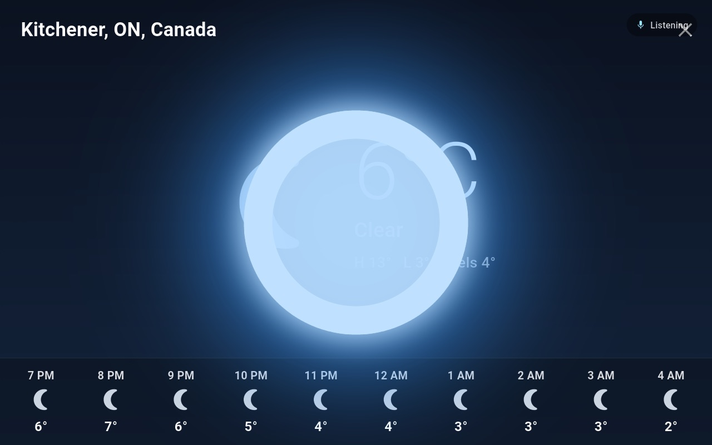

Conversation
It asks when it should.
Your words and its reply float over whatever is on screen, so the forecast you just asked for stays in view while you keep talking.
Because the mic reopens after every reply, a clarifying question costs nothing: you answer “the one on Gateway Park Drive” and the place card opens.
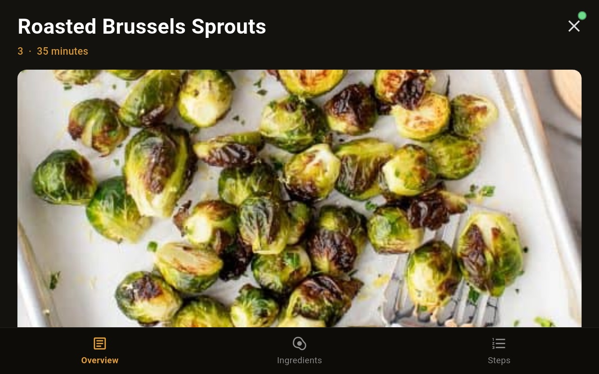
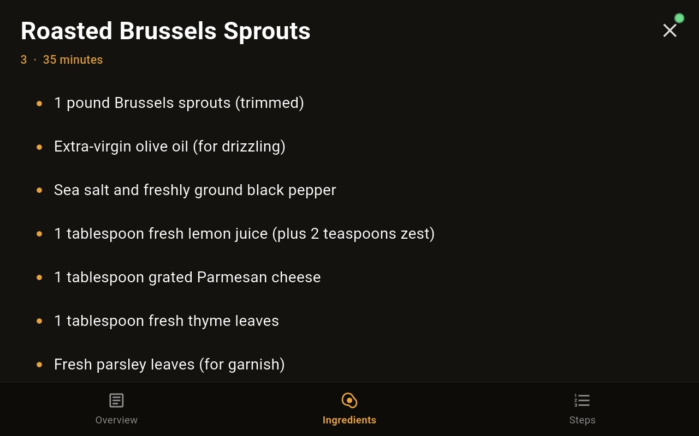

In the kitchen
Recipes you never have to touch.
“Find me a recipe for roasted Brussels sprouts.” The recipe opens full screen with three tabs. Say “ingredients”, “next step” or “go to step three” and the current step is highlighted.
Ask “how much lemon?” and it answers from the recipe on screen. Timers you set while cooking appear as big cards with a draining ring, and they live on the display, so they keep running even if the Mac goes down.
Without a word
Notifications from the house.
Each display keeps a channel open to the Core, so the Core can put things on screen without anyone speaking: banners marked info, reminder or alert, the ambient weather, and the current track. Banners close on their own after a short while or with a tap.

Full-screen moments
The answer takes the shape it needs.
Spoken answers are short. When the answer is something you'll want to look at, the display opens a dedicated screen, and it closes by voice, by tap, or on its own.
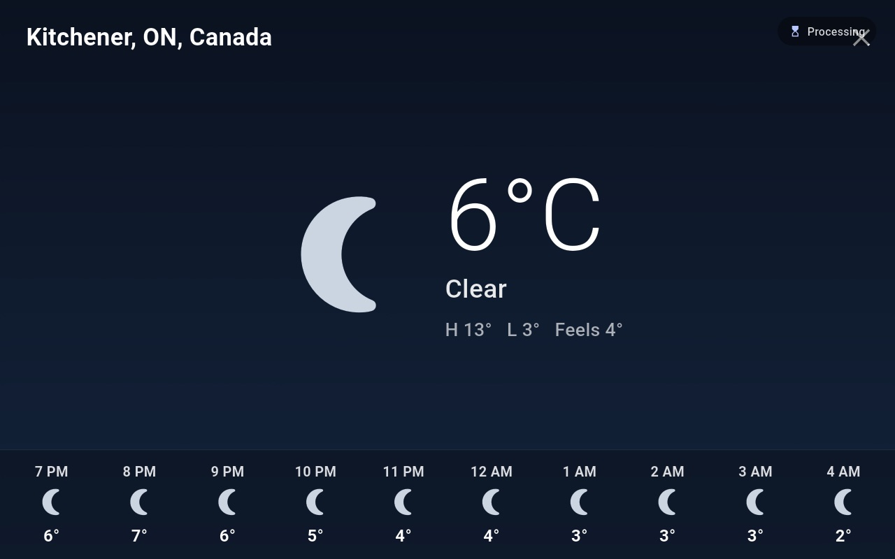
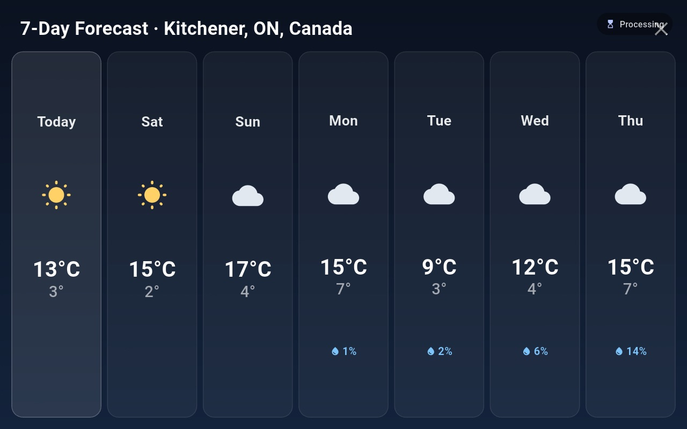


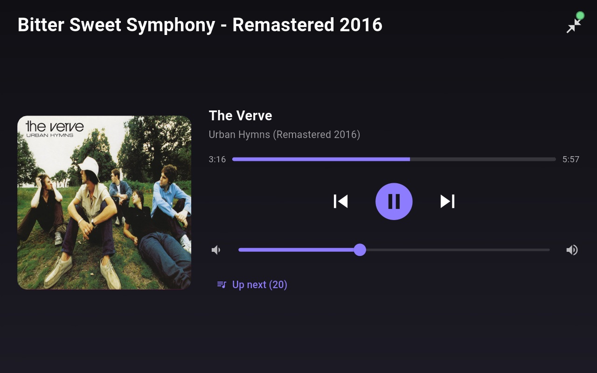
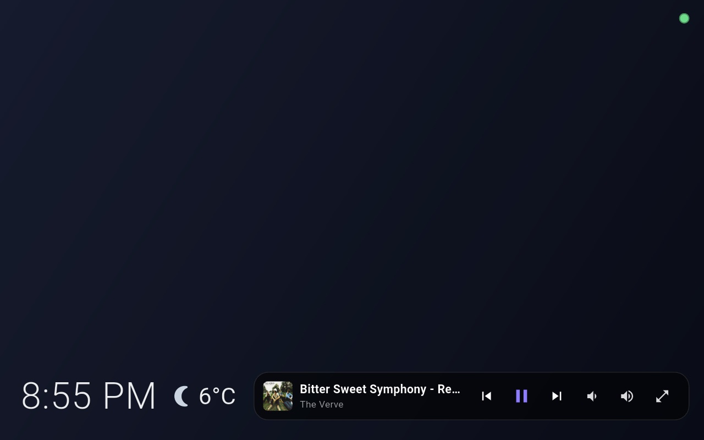
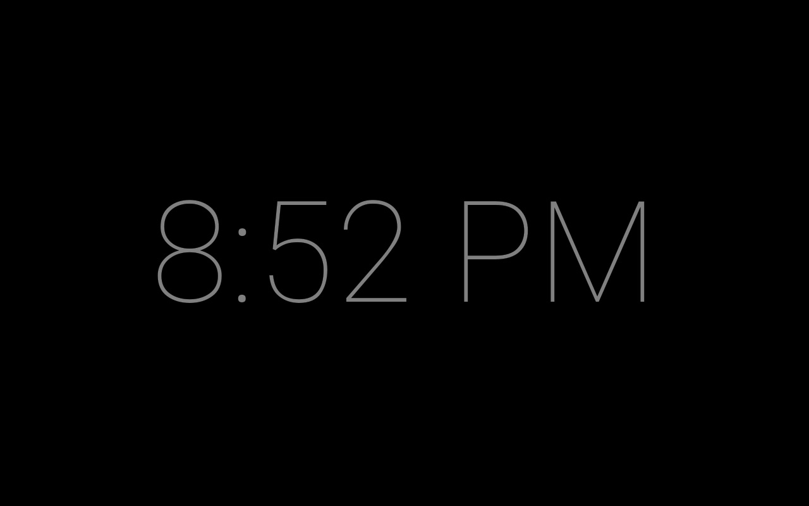
Settings on the device
Tune it from the couch.
Six sections, each designed to fit the 8-inch screen without scrolling. Changes apply immediately, with no Save button. Anything sensitive, such as keys, lives only in the Core's console on the Mac.
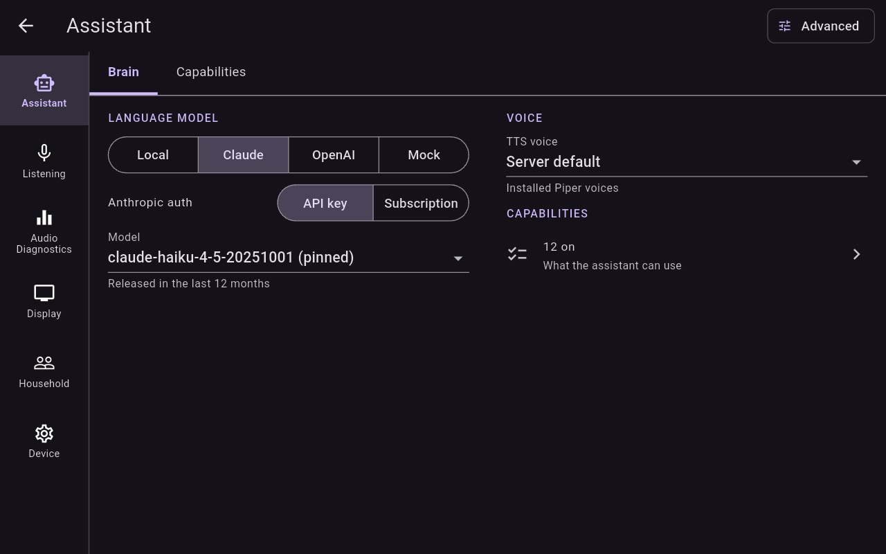
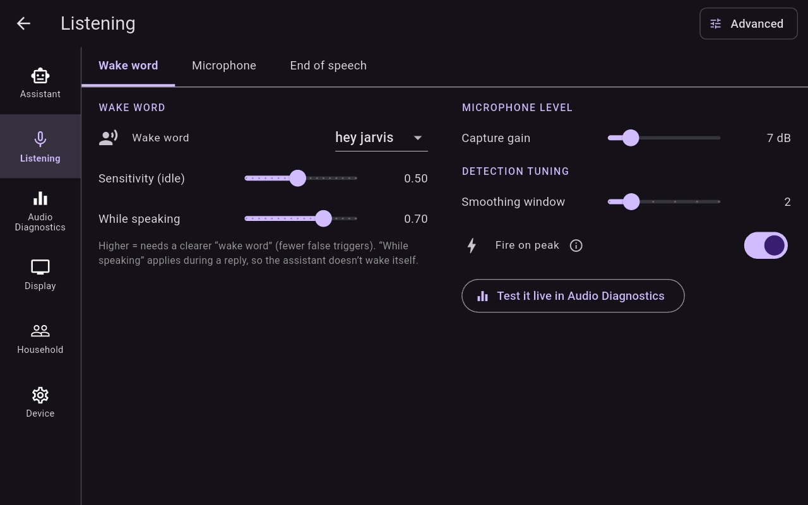

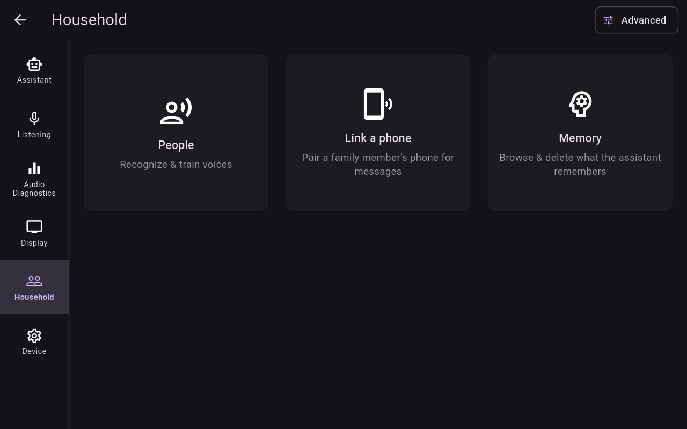
How it's built
Flutter for the face, Rust for the ears.
The Echo Show has about 1 GB of RAM and a 32-bit processor. All the time-critical work (audio capture and playback, the ring buffer, wake-word inference, the network protocol and discovery) runs in Rust, with pre-allocated buffers and no garbage-collector pauses on the audio path.
Flutter handles only presentation. It receives transcript, reply and state streams through flutter_rust_bridge and never touches an audio buffer or a socket.
- Finds the Core by itself using mDNS, and reconnects with backoff. A subtle indicator shows when it's disconnected.
- Updates itself. It downloads a signed APK, checks its SHA-256 and installs it. A build without the updater is available too.
- Bigger text by voice: “increase font” scales everything from 85% to 160%.
- Voice enrolment on the People screen: a guided “Add a voice” flow, and review of voices it couldn't identify.
- Companion phone app (Android and iOS): status, now playing, timers and memories on your phone while you're on the home network. (New; in testing.)